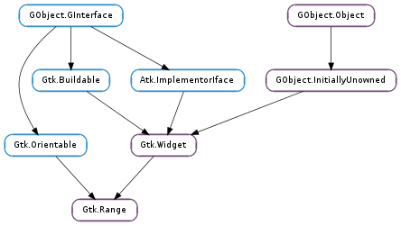

| Subclasses: | Gtk.Scale, Gtk.Scrollbar |
|---|
| get_adjustment() | |
| get_fill_level() | |
| get_flippable() | |
| get_inverted() | |
| get_lower_stepper_sensitivity() | |
| get_min_slider_size() | |
| get_range_rect() | |
| get_restrict_to_fill_level() | |
| get_round_digits() | |
| get_show_fill_level() | |
| get_slider_range() | |
| get_slider_size_fixed() | |
| get_upper_stepper_sensitivity() | |
| get_value() | |
| set_adjustment(adjustment) | |
| set_fill_level(fill_level) | |
| set_flippable(flippable) | |
| set_increments(step, page) | |
| set_inverted(setting) | |
| set_lower_stepper_sensitivity(sensitivity) | |
| set_min_slider_size(min_size) | |
| set_range(min, max) | |
| set_restrict_to_fill_level(restrict_to_fill_level) | |
| set_round_digits(round_digits) | |
| set_show_fill_level(show_fill_level) | |
| set_slider_size_fixed(size_fixed) | |
| set_upper_stepper_sensitivity(sensitivity) | |
| set_value(value) |
| Name | Type | Flags | Description |
|---|---|---|---|
| adjustment | Gtk.Adjustment | r/w | The Gtk.Adjustment that contains the current value of this range object |
| fill-level | float | r/w | The fill level. |
| inverted | bool | r/w | Invert direction slider moves to increase range value |
| lower-stepper-sensitivity | Gtk.SensitivityType | r/w | The sensitivity policy for the stepper that points to the adjustment’s lower side |
| restrict-to-fill-level | bool | r/w | Whether to restrict the upper boundary to the fill level. |
| round-digits | int | r/w | The number of digits to round the value to. |
| show-fill-level | bool | r/w | Whether to display a fill level indicator graphics on trough. |
| upper-stepper-sensitivity | Gtk.SensitivityType | r/w | The sensitivity policy for the stepper that points to the adjustment’s upper side |
| Name | Parameters | Return | Description |
|---|---|---|---|
| adjust-bounds | float | Emitted before clamping a value, to give the application a chance to adjust the bounds. | |
| change-value | Gtk.ScrollType, float | bool | The Gtk.Range ::change-value signal is emitted when a scroll action is performed on a range. It allows an application to determine the type of scroll event that occurred and the resultant new value. The application can handle the event itself and return True to prevent further processing. Or, by returning False, it can pass the event to other handlers until the default GTK+ handler is reached. The value parameter is unrounded. An application that overrides the Gtk.Range ::change-value signal is responsible for clamping the value to the desired number of decimal digits; the default GTK+ handler clamps the value based on Gtk.Range :round-digits. It is not possible to use delayed update policies in an overridden Gtk.Range ::change-value handler. |
| move-slider | Gtk.ScrollType | Virtual function that moves the slider. Used for keybindings. | |
| value-changed | Emitted when the range value changes. |
| Name | Type | Access |
|---|---|---|
| widget | Gtk.Widget | r |
Bases: Gtk.Widget, Gtk.Orientable
Gtk.Range is the common base class for widgets which visualize an adjustment, e.g Gtk.Scale or Gtk.Scrollbar.
Apart from signals for monitoring the parameters of the adjustment, Gtk.Range provides properties and methods for influencing the sensitivity of the “steppers”. It also provides properties and methods for setting a “fill level” on range widgets. See Gtk.Range.set_fill_level ().
| Returns: | a Gtk.Adjustment |
|---|---|
| Return type: | Gtk.Adjustment |
Get the Gtk.Adjustment which is the “model” object for Gtk.Range. See Gtk.Range.set_adjustment () for details. The return value does not have a reference added, so should not be unreferenced.
| Returns: | The current fill level |
|---|---|
| Return type: | float |
Gets the current position of the fill level indicator.
| Returns: | True if the range is flippable |
|---|---|
| Return type: | bool |
Gets the value set by Gtk.Range.set_flippable ().
| Returns: | True if the range is inverted |
|---|---|
| Return type: | bool |
Gets the value set by Gtk.Range.set_inverted ().
| Returns: | The lower stepper’s sensitivity policy. |
|---|---|
| Return type: | Gtk.SensitivityType |
Gets the sensitivity policy for the stepper that points to the ‘lower’ end of the Gtk.Range ‘s adjustment.
| Returns: | The minimum size of the range’s slider. |
|---|---|
| Return type: | int |
This function is useful mainly for Gtk.Range subclasses.
See Gtk.Range.set_min_slider_size ().
| Return type: | range_rect: cairo.RectangleInt |
|---|
This function returns the area that contains the range’s trough and its steppers, in widget->window coordinates.
This function is useful mainly for Gtk.Range subclasses.
| Returns: | True if range is restricted to the fill level. |
|---|---|
| Return type: | bool |
Gets whether the range is restricted to the fill level.
| Returns: | the number of digits to round to |
|---|---|
| Return type: | int |
Gets the number of digits to round the value to when it changes. See Gtk.Range ::change-value.
| Returns: | True if range shows the fill level. |
|---|---|
| Return type: | bool |
Gets whether the range displays the fill level graphically.
| Return type: | slider_start: int, slider_end: int |
|---|
This function returns sliders range along the long dimension, in widget->window coordinates.
This function is useful mainly for Gtk.Range subclasses.
| Returns: | whether the range’s slider has a fixed size. |
|---|---|
| Return type: | bool |
This function is useful mainly for Gtk.Range subclasses.
See Gtk.Range.set_slider_size_fixed ().
| Returns: | The upper stepper’s sensitivity policy. |
|---|---|
| Return type: | Gtk.SensitivityType |
Gets the sensitivity policy for the stepper that points to the ‘upper’ end of the Gtk.Range ‘s adjustment.
| Returns: | current value of the range. |
|---|---|
| Return type: | float |
Gets the current value of the range.
| Parameters: | adjustment (Gtk.Adjustment) – a Gtk.Adjustment |
|---|
Sets the adjustment to be used as the “model” object for this range widget. The adjustment indicates the current range value, the minimum and maximum range values, the step/page increments used for keybindings and scrolling, and the page size. The page size is normally 0 for Gtk.Scale and nonzero for Gtk.Scrollbar, and indicates the size of the visible area of the widget being scrolled. The page size affects the size of the scrollbar slider.
| Parameters: | fill_level (float) – the new position of the fill level indicator |
|---|
Set the new position of the fill level indicator.
The “fill level” is probably best described by its most prominent use case, which is an indicator for the amount of pre-buffering in a streaming media player. In that use case, the value of the range would indicate the current play position, and the fill level would be the position up to which the file/stream has been downloaded.
This amount of prebuffering can be displayed on the range’s trough and is themeable separately from the trough. To enable fill level display, use Gtk.Range.set_show_fill_level (). The range defaults to not showing the fill level.
Additionally, it’s possible to restrict the range’s slider position to values which are smaller than the fill level. This is controller by Gtk.Range.set_restrict_to_fill_level () and is by default enabled.
| Parameters: | flippable (bool) – True to make the range flippable |
|---|
If a range is flippable, it will switch its direction if it is horizontal and its direction is Gtk.TextDirection.RTL.
See Gtk.Widget.get_direction ().
| Parameters: |
|
|---|
Sets the step and page sizes for the range. The step size is used when the user clicks the Gtk.Scrollbar arrows or moves Gtk.Scale via arrow keys. The page size is used for example when moving via Page Up or Page Down keys.
| Parameters: | setting (bool) – True to invert the range |
|---|
Ranges normally move from lower to higher values as the slider moves from top to bottom or left to right. Inverted ranges have higher values at the top or on the right rather than on the bottom or left.
| Parameters: | sensitivity (Gtk.SensitivityType) – the lower stepper’s sensitivity policy. |
|---|
Sets the sensitivity policy for the stepper that points to the ‘lower’ end of the Gtk.Range ‘s adjustment.
| Parameters: | min_size (int) – The slider’s minimum size |
|---|
Sets the minimum size of the range’s slider.
This function is useful mainly for Gtk.Range subclasses.
| Parameters: |
|
|---|
Sets the allowable values in the Gtk.Range, and clamps the range value to be between min and max. (If the range has a non-zero page size, it is clamped between min and max - page-size.)
| Parameters: | restrict_to_fill_level (bool) – Whether the fill level restricts slider movement. |
|---|
Sets whether the slider is restricted to the fill level. See Gtk.Range.set_fill_level () for a general description of the fill level concept.
| Parameters: | round_digits (int) – the precision in digits, or -1 |
|---|
Sets the number of digits to round the value to when it changes. See Gtk.Range ::change-value.
| Parameters: | show_fill_level (bool) – Whether a fill level indicator graphics is shown. |
|---|
Sets whether a graphical fill level is show on the trough. See Gtk.Range.set_fill_level () for a general description of the fill level concept.
| Parameters: | size_fixed (bool) – True to make the slider size constant |
|---|
Sets whether the range’s slider has a fixed size, or a size that depends on its adjustment’s page size.
This function is useful mainly for Gtk.Range subclasses.
| Parameters: | sensitivity (Gtk.SensitivityType) – the upper stepper’s sensitivity policy. |
|---|
Sets the sensitivity policy for the stepper that points to the ‘upper’ end of the Gtk.Range ‘s adjustment.
| Parameters: | value (float) – new value of the range |
|---|
Sets the current value of the range; if the value is outside the minimum or maximum range values, it will be clamped to fit inside them. The range emits the Gtk.Range ::value-changed signal if the value changes.